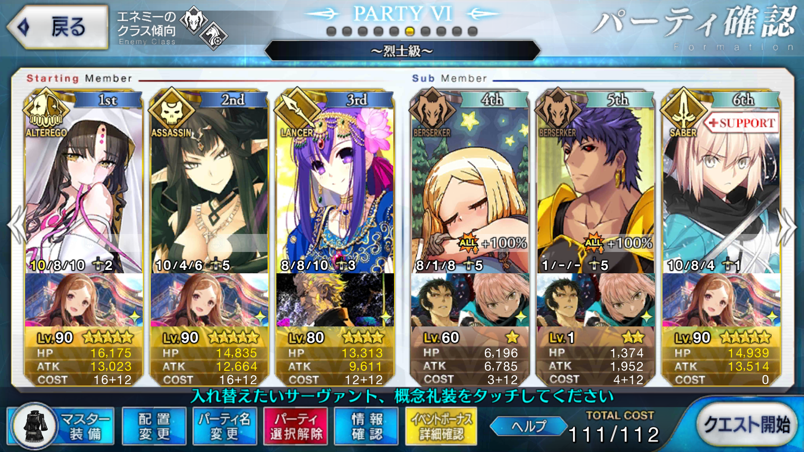
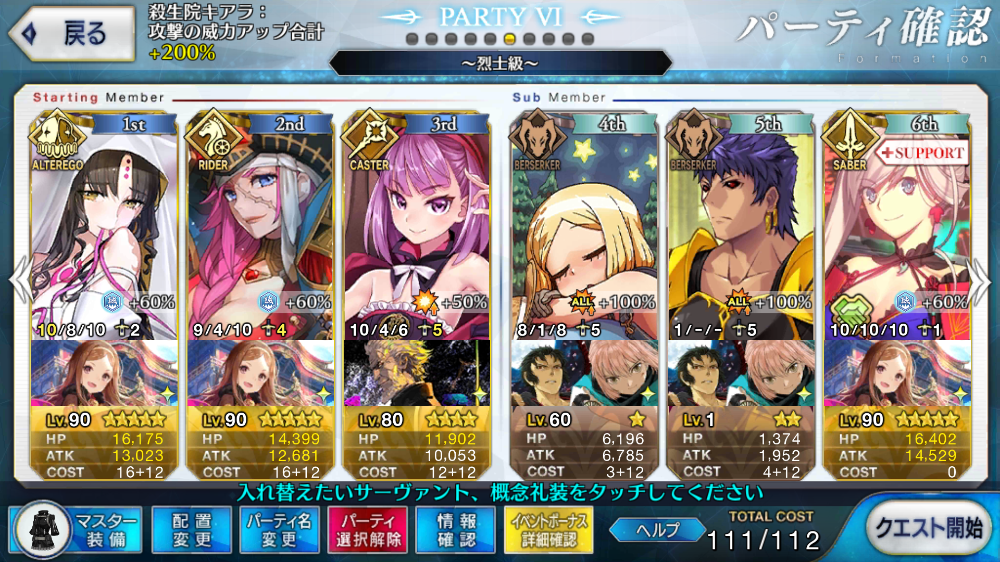

【FGO】復刻：ぐだぐだ明治維新 ライト版 ぐだぐだ掃討戦 烈士級
目次
この記事ではFGOイベントの周回を扱います。
編成画像にて最終再臨絵のネタバレがあるのでご注意を
基本方針
- 3T周回する
- 可能な限りドロップ追加礼装を搭載する
ドロップアイテム
原初の産毛
禁断の頁
騎の秘石
騎の輝石
小判
エネミー構成
- ノブ系（騎）
- ハティ公（ウガル）
- ハイカラ頼光さん（狂頼光）
編成例

オダチェンステラなし
新選組ポイント重視編成
パールヴァティーでNPを配布しつつ1wを落とし、キアラで2wを掃除
3wはセミラミスで吹き飛ばす
ただし、うまいことセミラミスのスキル3を使用できなければ確実に火力不足なので、マスター礼装はアニバーサリー・ブロンドが良いだろう
取り巻きはある程度の火力を持った全体宝具サーヴァントであれば問題にならないため、セミラミスにこだわる必要はもちろんない
NP30チャージを持つサーヴァントの中ではカリスマ＆特攻持ちのギルガメッシュが頭ひとつ抜けているか
次点でモードレッドやアキレウスが優秀

こちらの編成は3wをドレイクの宝具と追撃に任せてエレナでバフを入れる安定型
1wはエレナでも画像の構成であれば（マハトマ失敗時にも）突破できる
3w担当はドレイクまたはイシュタルが適しているが、星を出して追撃のクリティカル率を上げるドレイクのほうがやや安定する
アニバーサリー・ブロンドを使うのであればバフによる火力上昇の大きいイシュタルに軍配が上がるか
小判優先の場合はNPの都合から編成が大きく変わる
孔明を立たせ、凸カレスコキアラで1～2wを処理し、3wを火力サーヴァントで仕留めるのが楽か
周回用キャラ選別
対ライダーに攻撃有利が取れるアサシンはクラス補正で火力がやや低くなりがち
なおかつ、NP獲得スキルを持つ全体宝具サーヴァントはセミラミスしかおらず、編成の幅が狭くなりやすい
アルターエゴやバーサーカー、あるいは等倍クラスの起用も視野に入れつつ、安定する編成を探したい
アーラシュ/スパルタクス
いつもの
ニトクリスは相手がライダーのため、使いにくい
NP30チャージ可能な全体宝具サーヴァント
3w担当
取り巻きがライダーのため、キャスターは除外する
セミラミス
アサシンのため火力はそこまで高くないが、それでもキアラよりはずっと高い
取り巻きにも有利が取れる
うまくスキル3を使用できるよう、マスター礼装はアニバーサリー・ブロンドが最適だろう
モードレッド（剣）
魔力放出で自らの火力を伸ばすことができ、直感でクリティカルによる追撃をサポートできる
ギルガメッシュ（弓）
カリスマで全体の火力を伸ばすことができ、高い攻撃力とサーヴァント特攻で大ダメージが期待できる
NP50チャージ可能な全体宝具サーヴァント
3w担当
キャスターは火力が足りないため除外する
30チャージ勢に比べてNP補助について余裕ができ、NP補助役を別のキャラに差し替えられる
アルトリア（槍）
カリスマで全体の火力を、魔力放出で自らの火力を強化できる
イシュタル（弓）
美の顕現で全体の火力を強化でき、魔力放出で自らの火力を大きく伸ばせる
うっかり魔力放出を使い忘れないようにしたい
凸壬生狼の存在から特攻の倍率が効きにくい関係上、ギルよりもダメージが出る場合がある
ドレイク
星の開拓者でNPと共に星を獲得でき、嵐の航海者で火力を伸ばせる
宝具の火力はバフの数や倍率の関係からイシュタルに譲るが、星の開拓者でスターを獲得できる点が優秀
追撃込みで考えればイシュタルよりも安定する
殺生院キアラ
NPを50チャージでき、ライダーに対して攻撃有利、なおかつ全体宝具の持ち主はキアラのみ
ただし火力があるほうではないので、3wを単独で処理するのは厳しい
防御ダウンスキルがあり、地味に3wの火力上昇に貢献する
スキル3のクリティカル威力上昇も追撃には有用
2wで星を出せる場合には3wを担当できるかもしれないが、1～2w担当のほうが安定はしそう
NP補助役
パールヴァティー
NPパズルのオトモ
1wなら等倍でも凸壬生狼込みで問題なく処理でき、宝具で味方全体にNPを10配れる
更に次のターンに女神の恩恵で最大20のNPを付与できるため、味方単体に対しては合計で30付与できる
凸日輪城が初期NP40のため、NP30チャージ勢を使う場合は1w処理兼NP補助役としての活躍が見込める
エレナ（術）
雑魚がライダーのため相性は悪いものの、凸壬生狼が乗れば1wくらいなら処理できる
全体にNPを配布しながら1wを処理でき、なおかつ全種カードバフを3T持続させられる点は強力
マハトマによる威力強化が成功しなくとも宝具レベルが上がっていれば1wは突破可能
不安であればイシュタルなど、全体の火力を強化できるサーヴァントと並べて運用することでカバーできる
水着エレナも同様にNPを配布できるが、全体に対する火力補助がなく、雑魚相手に等倍ダメージを通せる以外は術エレナの下位互換
その他全体宝具持ち
水着スカサハ
星4全体宝具アサシン
2016夏イベント及び同復刻イベントの配布サーヴァントであり、イベントをこなしていれば宝具5になっている点で編成に組み込みやすい
セミラミスのスキル3を宝具による星出しで補助できる点も強力
ランスロット（狂）
水着スカサハと似た運用ができる星4バーサーカー
大量の星を出せる他、自らのクリティカル威力を増強させられるので、クリティカル戦法にも強い
また、宝具によるリチャージとサポートサーヴァントの組み合わせ次第では2連続で宝具を放つことも可能
織田信長（弓）
騎乗特攻、神性特攻を両方持ち、頼光に対して非常に高いダメージを期待できる
ただし、凸壬生狼の存在から普段ほど劇的な倍率ではなく、きっちりスキルを鍛えておかなければ確殺には至らない